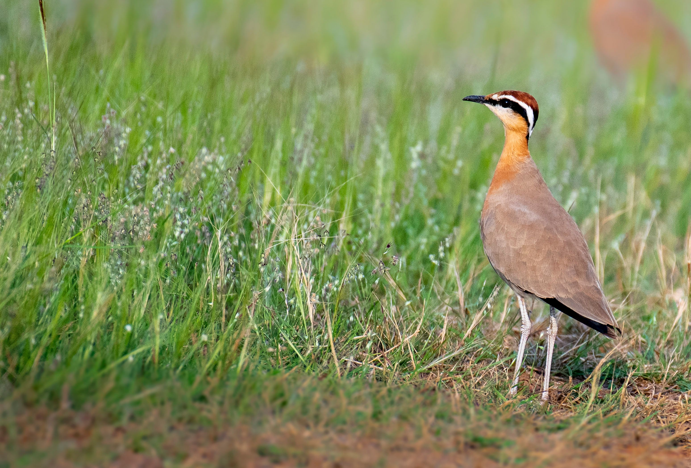

The Indian Courser is a distinctive ground-dwelling wader of dry open country. It has a slender body, long legs, a short bill, and warm brown and sandy plumage that blends into its surroundings. Unlike many waders, it is more often found far from water and runs rapidly across open ground while searching for insects. Its combination of sandy-brown plumage, long legs, short bill, and terrestrial habits helps distinguish it from more typical water-associated waders. Compared with the similar Red-Wattled Lapwing, it is distinguished by the combination of features described above. Its preference for dry plains, open scrub, sandy areas, rocky ground, and semi-arid grassland also helps separate it from species that use different habitats. Its characteristic behaviour, including fast-running and mainly terrestrial; usually searches for food while walking or running across open ground, provides another useful field clue. Taken together, these differences make it easier to distinguish from similar species when the bird is seen clearly.